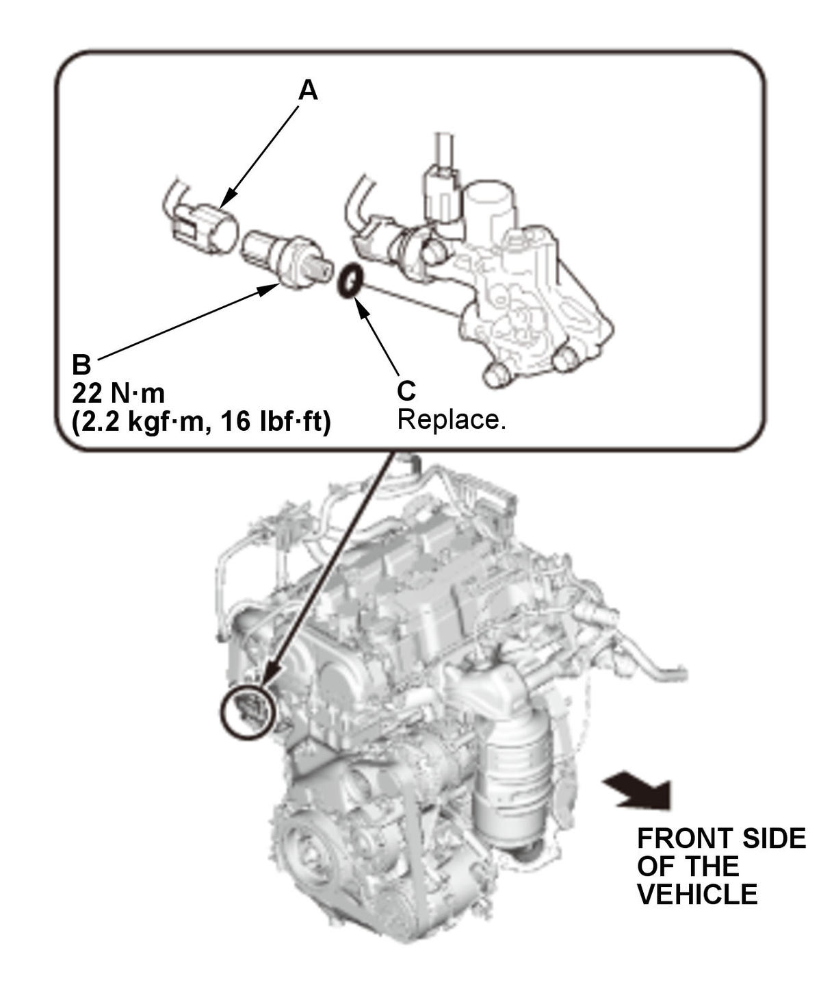

LEMON Manuals
: Even more car manuals for everyone: 1960-2025
Home
>>
Honda
>>
2016
>>
Civic LX, 4D Sedan, Automatic CVT Trans
>>
Repair and Diagnosis
>>
Engine Performance
>>
Fuel Delivery
>>
Engine Control / Engine Mechanical - Service Information
>>
Removal and Installation
>>
Rocker Arm Oil Pressure Switch Removal and Installation (K20C2)
>>
Removal and Installation
Removal and Installation
Rocker Arm Oil Pressure Switch - Remove
Fig 1: Rocker Arm Oil Pressure Switch Components With Torque Specifications (K20C2)

Courtesy of HONDA, U.S.A., INC.
1. Disconnect the connector (A).
2. Remove the rocker arm oil pressure switch (B) with the O-ring (C).
All Removed Parts - Install
1. Install the parts in the reverse order of removal with a new O-ring.